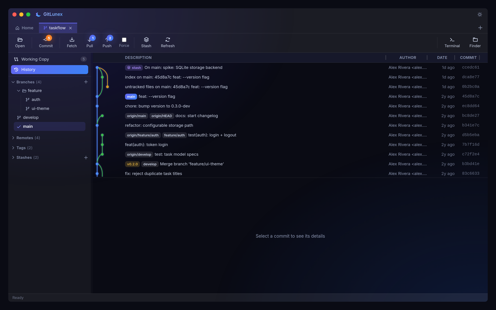

01
A branch-aware history graph
See every branch, tag, remote and stash across all refs in one clean graph. Colored lanes, ref pills and ahead/behind badges make the shape of your history obvious at a glance.
- Graph across all refs, up to 500 commits
- Per-commit changed files & diffs
- Multi-select a range to compare
